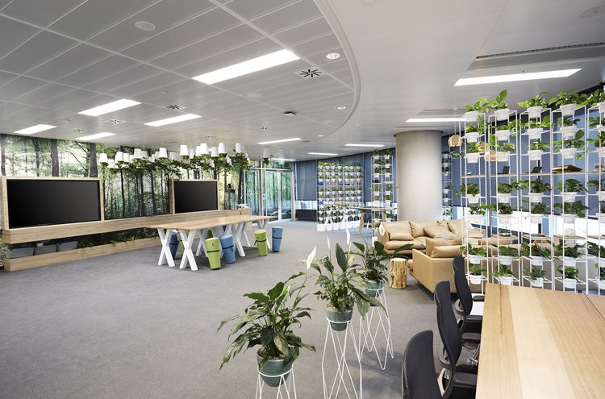

Innovation Lab
Post-graduate - 8 mois
L’Innovation Lab est un programme interdisciplinaire d’innovation durable.
Il forme une nouvelle génération d’innovateurs, déjà expérimentés ou diplômés dans leur domaine
et qui souhaitent enrichir leurs compétences pour développer des solutions durables à des problématiques complexes.
Chaque promotion travaille sur un challenge combinant des enjeux technologiques, sociaux, économiques et environnementaux
Chaque défi est mené avec la collaboration d’une communauté de partenaires et de contributeurs :
entreprises, organisations publiques, associations, académiques…
Les apprenants se forment sur le terrain en expérimentant un cycle complet d’innovation durable.
Pourquoi L’Innovation Lab au sein de La Plateforme ?
Les défis de société auxquels nous sommes confrontés sont complexes et interconnectés. Ils combinent des enjeux économiques, environnementaux
et sociaux. Ils sont étroitement liés aux technologies numériques qui offrent des opportunités de solutions mais posent également des questions
éthiques.La question de la durabilité dans l’innovation est plus que jamais cruciale, car elle détermine notre capacité à apporter des solutions sans
compromettre le futur des générations à venir. Cela implique d’innover dans le respect du vivant, en limitant nos besoins en ressources naturelles,
en mettant en place des circuits circulaires, en utilisant les bonnes technologies, et en étant le plus inclusif possible.
Pour concevoir et exécuter une telle démarche d’innovation, dans le monde complexe qui est le nôtre, il faut donc déployer une palette de compétences
techniques et relationnelles qui va bien au-delà de son savoir-faire “métier”. C’est ce que nous proposons d’acquérir et d’explorer au sein de
l’Innovation Lab.
Plus d’informations sur le challenge #1 « Habiter Demain » qui débute en février 2022